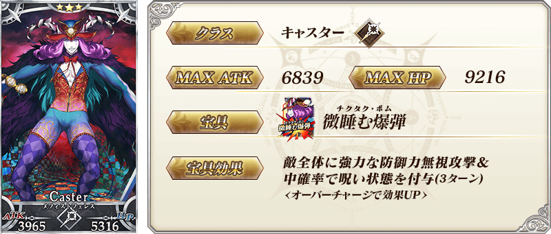

◆「FGO冬祭 2018-2019 ～移動大馬戲團！～舉辦記念Pick Up召喚(每日交替)」期間◆
期間:2018年12月21日(五) 17:00～12月31日(一) 11:59
為了記念於全國各地進行「FGO冬祭 2018-2019 ～移動大馬戲團！～」的舉辦，舉辦期間限定「FGO冬祭 2018-2019 ～移動大馬戲團！～舉辦記念Pick Up召喚(每日交替)」！
本次從在「FGO冬祭 2018-2019 ～移動大馬戲團！～」主視覺圖繪製的Servant之中，「★4(SR)瓦爾基里」「★4(SR)湯瑪斯・愛迪生」以每日交替Pick Up！
「★5(SSR)拿破崙」「★3(R)梅菲斯托費勒斯」常駐Pick Up。
詳情請在聖晶石召喚畫面左下的召喚詳細確認。
◆有關Servant的注意◆
※請注意「FGO冬祭 2018-2019 ～移動大馬戲團！～舉辦記念Pick Up召喚(每日交替)」做為每日交替，湯瑪斯・愛迪生就算Pick Up期間中也會有不被抽出的日子。
※拿破崙、瓦爾基里、湯瑪斯・愛迪生、梅菲斯托費勒斯在Pick Up期間結束後仍會在故事召喚被抽出。
※Pick Up期間中，湯瑪斯・愛迪生就算通過章節前也能入手。
Pick Up期間中，Pick Up Servant的出現機率提升！
10次召喚中確定1張★4(SR)以上和確定1位★3(R)以上的Servant！
※確定★4(SR)以上包含Servant和概念禮裝。
| 每日交替Pick Up期間 | 每日交替Pick Up內容 |
|---|---|
| 12月21日(五) 17:00～ 12月23日(日) 22:59 |
拿破崙 瓦爾基里 湯瑪斯・愛迪生 |
| 12月23日(日) 23:00～12月24日(一) 22:59 | 拿破崙 瓦爾基里 |
| 12月24日(一) 23:00～12月25日(二) 22:59 | 拿破崙 湯瑪斯・愛迪生 |
| 12月25日(二) 23:00～12月26日(三) 22:59 | 拿破崙 瓦爾基里 湯瑪斯・愛迪生 |
| 12月26日(三) 23:00～ 12月28日(五) 22:59 |
拿破崙 瓦爾基里 |
| 12月28日(五) 23:00～ 12月30日(日) 22:59 |
拿破崙 湯瑪斯・愛迪生 |
| 12月30日(日) 23:00～12月31日(一) 11:59 | 拿破崙 瓦爾基里 湯瑪斯・愛迪生 |
※請注意會以每日交替變更Pick Up的Servant。


※上述「★4(SR)湯瑪斯・愛迪生」的卡面為靈基再臨第2階段。

※上述「★3(R)梅菲斯托費勒斯」的卡面為靈基再臨第2階段。

介紹拿破崙、瓦爾基里、湯瑪斯・愛迪生、梅菲斯托費勒斯的寶具演出！
在「Fate/Grand Order」官方網站內的公告中，公開了「★5(SSR)拿破崙」「★4(SR)瓦爾基里」「★4(SR)湯瑪斯・愛迪生」「★3(R)梅菲斯托費勒斯」的寶具演出。敬請確認。